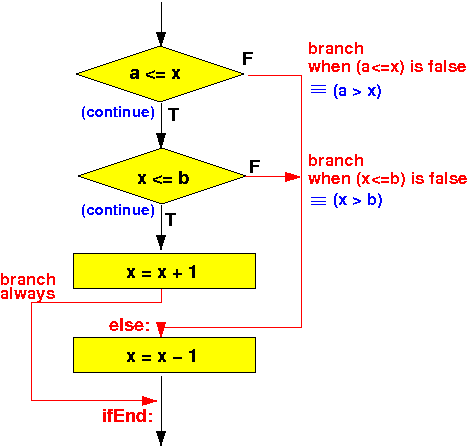

- A compound condition (or Boolean expression)
is one where different relationships
are combined using logical operators
The logical operators are:
- or
- and
- not
-
The "short circuit boolean evaluation"
is a technique that is
commonly used
in high level programming languages
(such as
C, C++, Java) to evaluate
compound boolean expressions
- When evaluating a boolean expression that contains AND and OR operations, the boolean expression evaluation can be terminiated prematurely for some outcome of the left hand side of the compound clause
I will explain this premature termination with an example.
In this webpage, I will explain the premature termination when the boolean expression has the form:
LHS (left hand side) AND ....In the next webpage, I will explain the premature termination when the boolean expression contains an OR operator.
- Consider this if-statement
with an and logical operator:
if ( cond and "Other conditions" ) statement1; else statement2;The compound condition is:
cond and "Other conditions"When we evaluation the condition cond at the left hand side, there are 2 possible outcomes:
- cond ≡ true:
- In this case, we must evaluate the "Other conditions" to determine the outcome of cond and "Other conditions"
- cond ≡ false:
- In this case, we know the
outcome of
cond and
"Other conditions"
≡ false !!!
(Because false and any-boolean-value ≡ false)
- In this case, we know the
outcome of
cond and
"Other conditions"
≡ false !!!
So in the case that cond ≡ false, we can take the else branch of the program flow immediately (and terminate the boolean evaluation prematurely !!!)
- cond ≡ true:
- We can use this
short-circuit boolean evalation to
draw up the following
program flow control where we
make the branch decision
immediately
after evaluating a
part of the
boolean expression:
if ( cond and "Other conditions" ) ----> | statement1; V else +--------------+ FALSE statement2; | eval cond |-----------------+ +--------------+ | | (TRUE) | | | V | +--------------+ FALSE | |eval OtherCond|------------+ | +--------------+ | | | (TRUE) | | | | | V | | statement1 | | | | | +---------+ | | | | | | | | | statement2 <-------------+----+ | | | | +-------->+ | | V
- The assembler construct
that realizes the
program control flow
of the
if-statement
with an
compound condition
"cond and OtherConditions" is as follows:
Evaluate "cond" (use cmp) FALSE Branch on FALSE outcome of "cond" to label B: -------------+ | (TRUE) | | | V | Evaluate "OtherCOnditions" (another cmp) | | FALSE | Branch on FALSE outcome of "theRest" to label B: --------->| | (TRUE) | | | V | A: "statement1" assembler code | | | Branch always to label C: --------------+ | | | | | B: "statement2" assembler code <---------|----------------+ | | V | C: +<-------------------------------+ | VThe label A is not used, but I put it in the flow chart to mark the start of the then-part of the high level language program
We will code an example to make things clearer.
(In class, you will see me develop the code interactively - with explanations while I am writing the assembler instructions. Unfortunately, I can't do that on a webpage....)
- High level programming langange:
int x, y, a; if (a <= x and x <= b) x = x + 1; else x = x - 1;The flow chart of the above program is:
 The assembler program code for this compound if-statement is:
/* -------------------------------------------------- if (a <= x and x <= b) x = x + 1; else x = x - 1; -------------------------------------------------- */ .text main: // Test if (a <= x ) movw r0, #:lower16:a movt r0, #:upper16:a // r0 = addr(a) ldr r0, [r0] // r0 = a movw r1, #:lower16:x movt r1, #:upper16:x // r1 = addr(x) ldr r1, [r1] // r1 = x cmp r0, r1 // a <= x ? bgt else // Branch to "else" if a > x // test if ( x <= b ) movw r0, #:lower16:x movt r0, #:upper16:x // r0 = addr(x) ldr r0, [r0] // r0 = x movw r1, #:lower16:b movt r1, #:upper16:b // r1 = addr(b) ldr r1, [r1] // r1 = b cmp r0, r1 // x <= b ? bgt else // Branch to "else" if x > b then: // x = x + 1 movw r0, #:lower16:x movt r0, #:upper16:x // r0 = addr(x) ldr r1, [r0] // r1 = x add r1, r1, #1 // r1 = x+1 str r1, [r0] // x = x+1 b ifEnd // ** SKIP over the else part !!! *** else: // x = x - 1 movw r0, #:lower16:x movt r0, #:upper16:x // r0 = addr(x) ldr r1, [r0] // r1 = x sub r1, r1, #1 // r1 = x-1 str r1, [r0] // x = x-1 ifEnd: /* -------------------------------------------------- Begin of the permanent program variables -------------------------------------------------- */ .data x: .4byte 15 // Try x outside 10 ... 20 a: .4byte 10 b: .4byte 20 .end
- Example Program:
(Demo above code)

- Prog file: /home/cs255001/demo/asm/6-if/if-and.s
How to run the program:
- To compile: as255 if-and
- To run: use EGTAPI